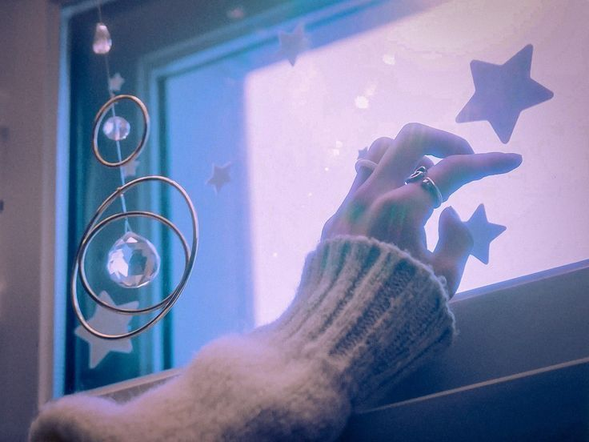
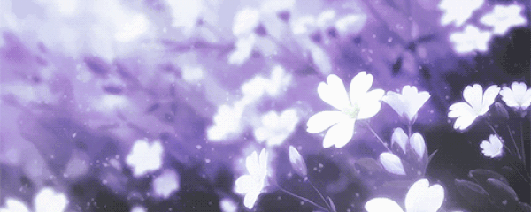

<!DOCTYPE html>
<html lang="id">
<head>
  <meta charset="UTF-8">
  <meta name="viewport" content="width=device-width, initial-scale=1.0">
  <title>Reva | Home</title>
  <link rel="stylesheet" href="style.css">
</head>
<body>
  <div class="container">
    <!-- Sidebar kiri -->
    <aside class="sidebar">
      
      <h2>Reva  (╹ڡ╹ )</h2>
      <a href="mailto:fardareva@gmail.com" class="email">fardareva@gmail.com</a>

      <p>Reva Farda Azkiya | She/her | 19y.o | ISTP</p>
      <p>Informatics Engineering student at Pelita Bangsa University</p>

      <p>Cikarang, 29 Oct 2006</p>

      <h3>Socials</h3>
      <ul class="socials">
        <li><a href="https://www.instagram.com/miraverculous_" target="_blank">Instagram</a> | <a href="https://github.com/rfaa29" target="_blank">GitHub</a></li>
        <li><a href="https://www.youtube.com/@imreeeva" target="_blank">YouTube</a> | <a href="www.linkedin.com/in/reva-farda-azkiya-347a40318" target="_blank">LinkedIn</a></li>
      </ul>
      
      <div class="music-card">
        
        <div class="music-info">
        <h3>Radwimps | Futarigoto - kobasolo ft.Harutya</h3>
        <audio controls>
          <source src="Futari Goto feat.Harutya - kobasolo.mp3" type="audio/mpeg">
          Browser kamu tidak mendukung pemutar audio.
        </audio>

    </aside>

    <!-- Konten kanan -->
    <main class="content">
      <nav class="topnav">
        <a href="index.html" class="active">Home</a>
        <a href="about.html">About</a>
        <a href="portfolio.html">Portfolio</a>
        <a href="contact.html">Contact</a>
      </nav>

      <section class="main-section">
        <h2>:: Welcome</h2>
        <p>Hello! I’m <strong>Reva Farda Azkiya</strong>
        an Informatics Engineering student who is leaning about computer with only "2 x 2 = 4" level of mathematics. 
        This website is made for middle-exam project of Website Programming. Little things about me, i'm first child of three siblings.
        I love listening to japanesene music and watching anime, i also love reading such mystery and romance novel — i love reading fanfiction the most!
        My life is full of unexpected journey, but the one who got me starled the most is that i being an Informatics Engineering student now.
        Still, even i don't have any basic knowlegde about the major i choose, i want to do it all by my strength. So i'll do my best!
        So, let's end this introduction here and explore about me more in this website 🌸</p>

        <p>Please use the navigation above to explore more about me!</p>

                <div class="intro">
          
        </div>
      </section>
    </div>
    </main>
      
</div>
  </div>
    <script src="script.js"></script>
</body>
      <footer>
        <p>&copy; 2025 Reva Farda Azkiya. Semua hak dilindungi.</p>
      </footer>
</html>
